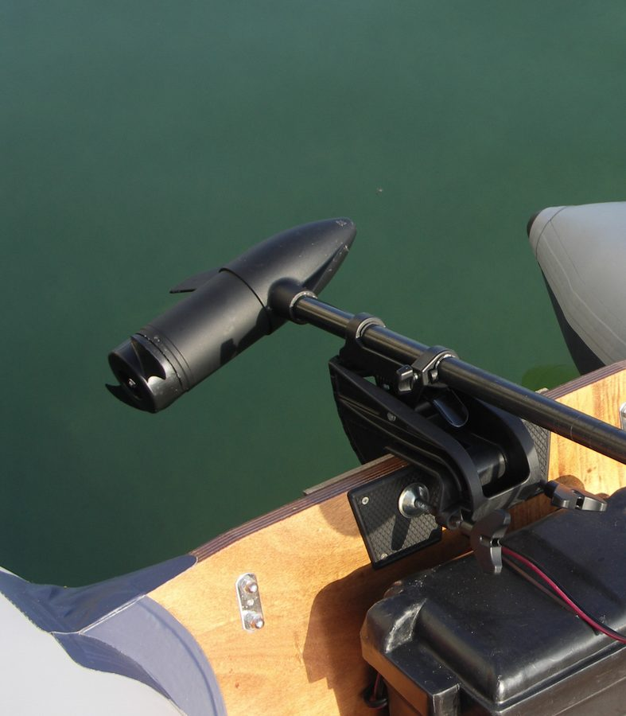
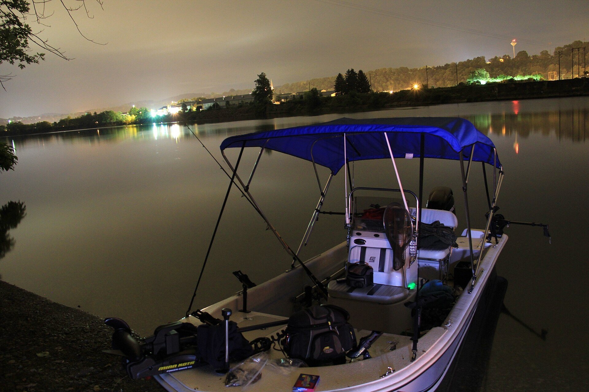
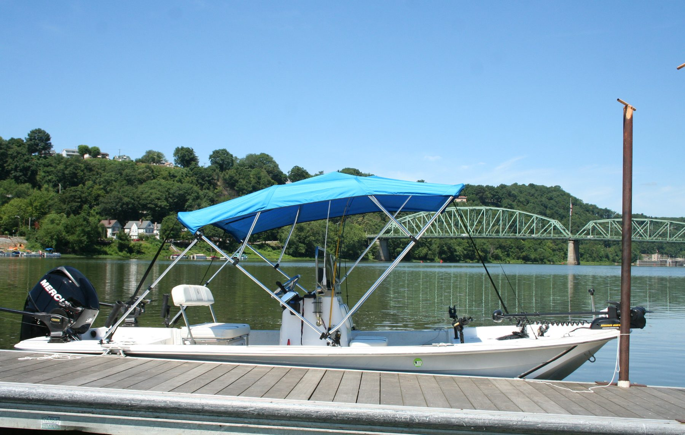
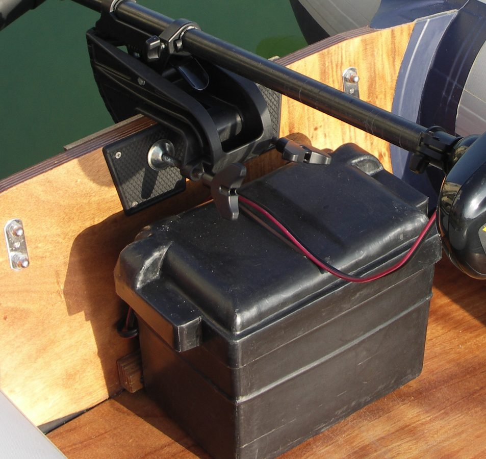
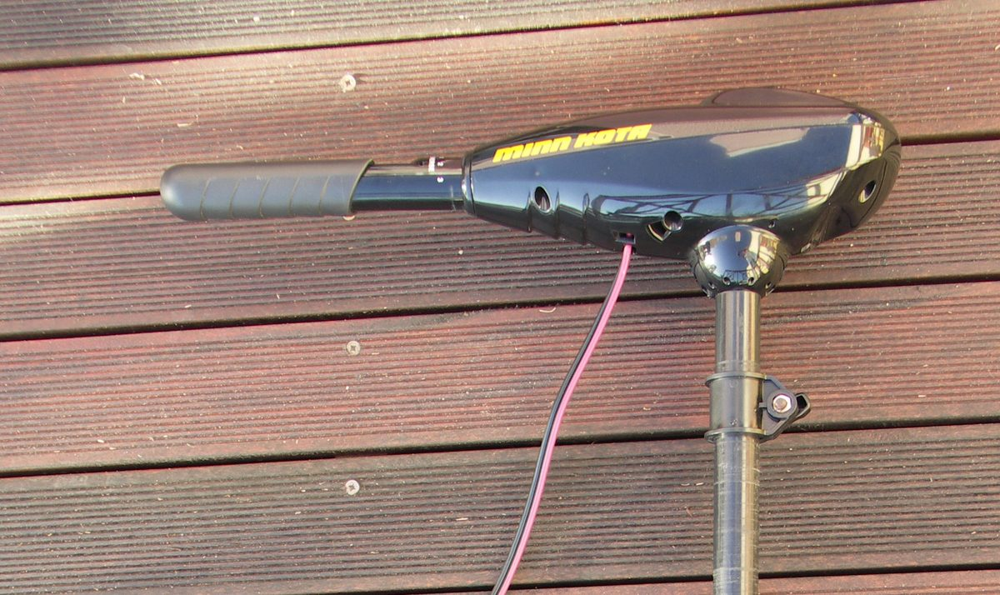
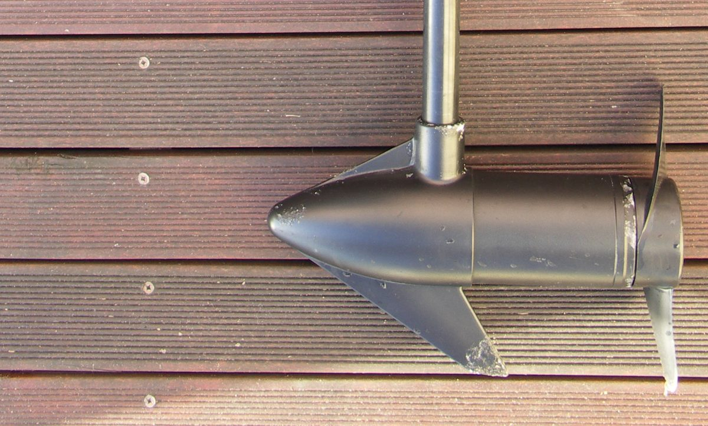
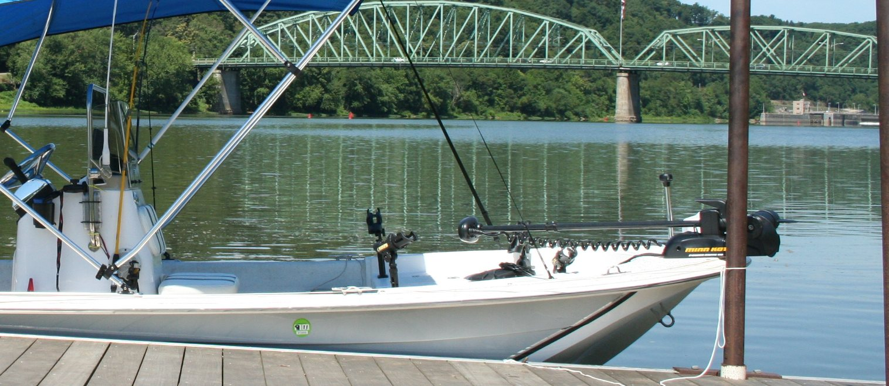
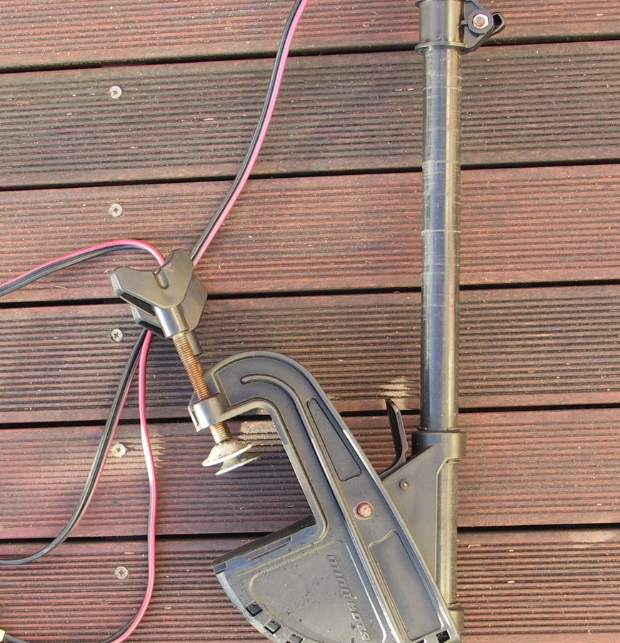
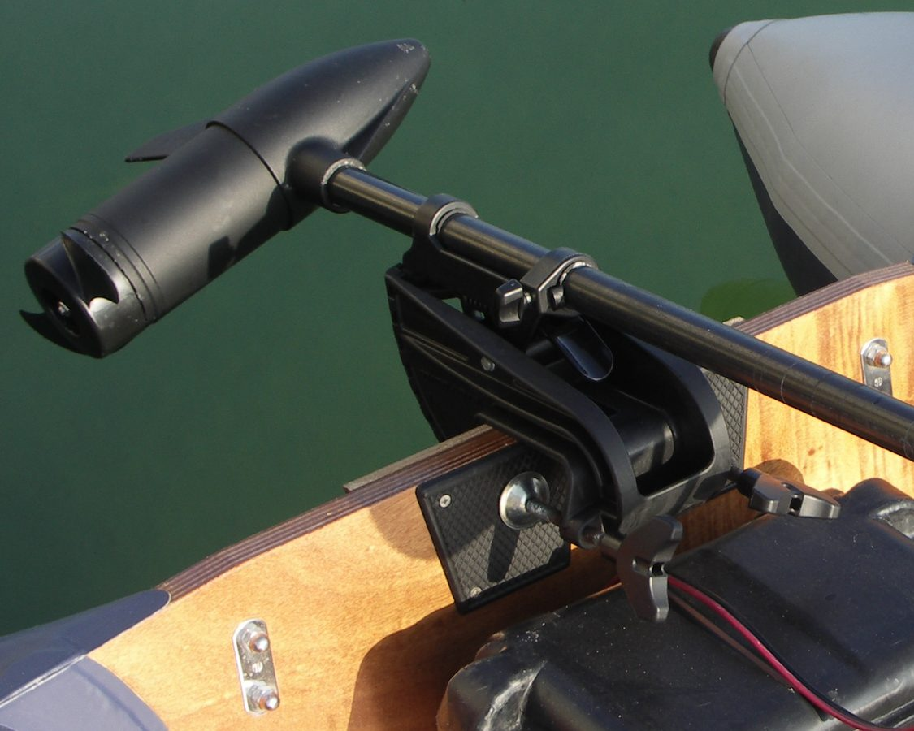
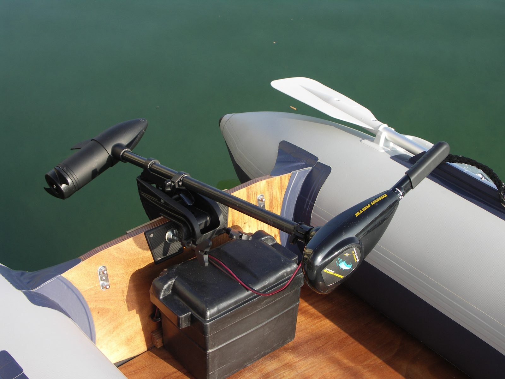

01
Trolling motor diagnostics
A motor that will not run, runs weak, or cuts out needs the fault found first. The diagnosis comes before a pile of parts.
Request this serviceWebsite demonstration

Electric trolling motor repair
A trolling motor that quits will end the day even when the rest of the boat is ready. Trolling Motors 101 diagnoses and repairs the motor so you can get back to fishing.
The shop
Electric trolling motors do the quiet work on a fishing boat: slipping a bank, holding on a point, and putting the bow where the cast needs to land. When the motor will not run, will not steer, or will not hold, that is the problem this shop is here to solve.
The work stays on that motor. Find the fault, explain it in plain language, and repair it so the boat can fish again.

Repair services
From a motor that will not turn on to a prop that will not push, the job starts by finding what actually failed.

A motor that will not run, runs weak, or cuts out needs the fault found first. The diagnosis comes before a pile of parts.
Request this service
Power has to get from the battery to the motor. This covers wiring, connections, plugs, and the faults that make a good motor look dead.
Request this service
Foot pedals, cables, and steering that stick, flop, or stop answering. The problem gets traced to the part that actually failed.
Request this service
A bent propeller or damaged shaft wastes thrust and makes noise. The lower unit gets checked with the hardware that drives it.
Request this service
Positioning features only help when they hold. Troubleshooting stays with the motor in front of us, and coverage is confirmed per model.
Request this service
An inspection aimed at wear, corrosion, and loose hardware before those problems end a day on the water.
Request this service
Brackets, clamps, and the hardware that deploys and stows the motor. If it will not lock, lift, or sit straight, this is the work.
Request this serviceBrands
These names are here so you can tell us what is on the boat. They are illustrative references only. This demonstration does not claim authorized service status, and it does not confirm which models are covered.
Why this shop
The reason to call is simple: the motor is down, and the fishing is not going to wait on a guess.
Electric trolling motors. The work stays on the equipment that positions a fishing boat.
You should know what failed before anyone starts swapping parts.
The finding and the repair are explained without a pile of jargon.
The result that matters is a motor that runs and a boat that can fish again.
How it works
Tell us the brand, the model if you know it, and what the motor is doing.
The fault gets identified so the repair is based on what actually failed.
With the motor working, the boat can get back on the water.

About us
Trolling Motors 101 repairs electric trolling motors for fishing boats. Anglers depend on those motors to hold a spot, work a shoreline, and stay quiet over fish. When one fails, the rest of the boat can be fine and the day is still over.
The shop is about that specific problem. Find the fault. Explain it clearly. Repair the motor so it can go back on the water.
A finished business site would also list the owner’s background, the shop location, hours, and how to call. Those details are not invented here. They belong on the page only after the owner confirms them.
Request service
A few details are enough to start: who to reply to, which motor it is, and what went wrong. On a live site this request would go to an address the owner approves. Here, it stops on the page.